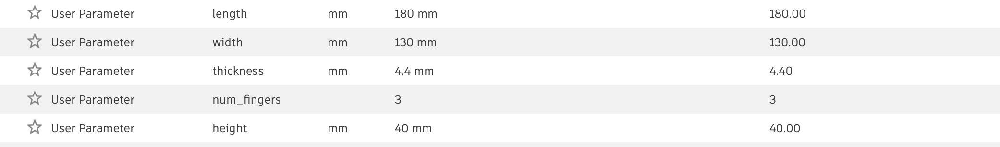
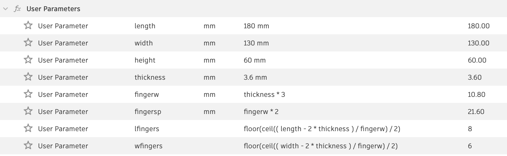
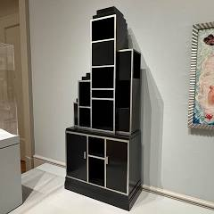

When I began making the box, I followed the tutorials available on the course website. That introduced me to parametric design (as I set parameters), but resulted in a box that did not have any kerf.

Hence, for my next attempt, I chose to introduce a kerf variable such that the teeth size depended on the kerf. This proved to be far more challenging; however, it resulted in a functional box that I chose to include a handle on.

However, after being blown away by my classmates' boxes, I chose to redesign my box one final time in the style of my favorite sculpture in the Art Institute of Chicago: "Cabinent." Designing this was a good exercise in patience because there were many different sides, and my initial parametric approach didn't quite work since I wanted different numbers and sizes of teeth on each edge. After building it, I now feel comfortable adding teeth and managing kerf.

Since I was still feeling uncomfortable with Fusion, I completed so, so many Fusion360 tutorials. In particular, ones from Product Design Online and Fusion Essentials were useful in learning how to manage components, extrusion, mirroring, shapes, canvases, and so much more. I'm attaching the brick and bottle which are from the first two tutorials that I completed. I thought designing these was especially cool because the bottle involved rotating a 2d shape INTO 3D, and the brick involved using rectangular patterns which seems like it will always be applicable. Notably, I also used the paperclip tutorial (not pictured) to learn how to use the canvas tool to trace real-life objects which I used in part 3 of this assignment and while designing my own imitation of "Cabinent."
The first thing I choose to model was my waterbottle. Especially because I am interested in 3D printing screwing threads, I figured this would be a good chance to get some practice. Some tools I used were the "thread" tool, sketching (for shape and designs), and extrude. I also used offset planes so I could better see where my sketches would fit into. Going forward, I've learned that it's easier to just sketch "onto" another object than create more offset planes. This waterbottle is also to-scale, since I used the canvas tool to trace it. I also really wanted to get a sense of how to use components, cause motion, and manipulate gears. Further, I think for my final project I'd like to be able to use translational motion. So, for my second design, I created a rank-and-pinion that converts rotational motion to translational motion. I love seeing how cleanly the gears mesh together, but am aware that I will need to 3D print it to understand how successful the design is in terms of kerf / tolerance. Also, linking two gears together is also something I need to work on.